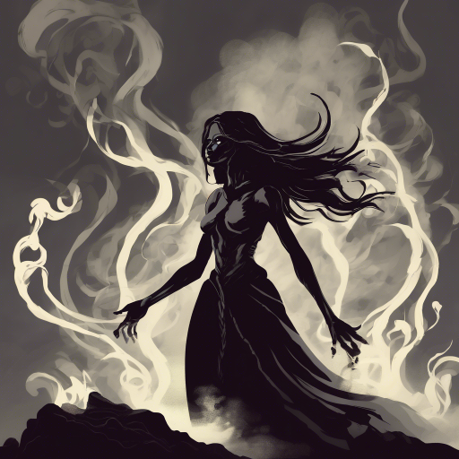

Egy pillanatra habozol. De aztán érzed a hatalmat. Egy isteni súgás a tudatod mélyéről: "Parancsolj."
A Füst remegni kezd. Olyan, mintha lélegezne – és mostantól te szabod meg a ritmusát. A hangok, amelyek eddig kérleltek vagy suttogtak, most engedelmesen hajolnak meg előtted. Az Árnyékszülöttek térdre ereszkednek, a világ sötétebb részei pedig újraélednek – már nem véletlenszerű rémként, hanem katonákként.
Te vagy a központ. A Füst szeme, szája, akarata. A túlélők lassan felismerik, hogy új korszak kezdődött. Nem rombolás, hanem uralom.
Felépíted a városokat – a saját képedre. A tudatod átitatja a világot. Egy új rend jön el – ahol nincs káosz, nincs kérdés, csak irányítás. És ez... megnyugtatóbb, mint hinnék.
Az emberek nem mindig látják a zsarnokságot, ha az rendet hoz. Te viszont pontosan tudod, mit tettél. És nem bánod.
